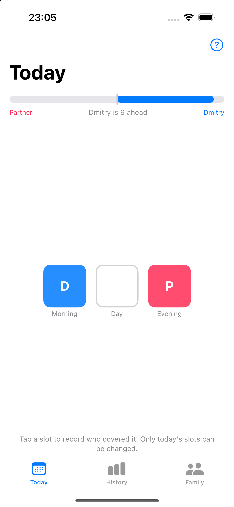
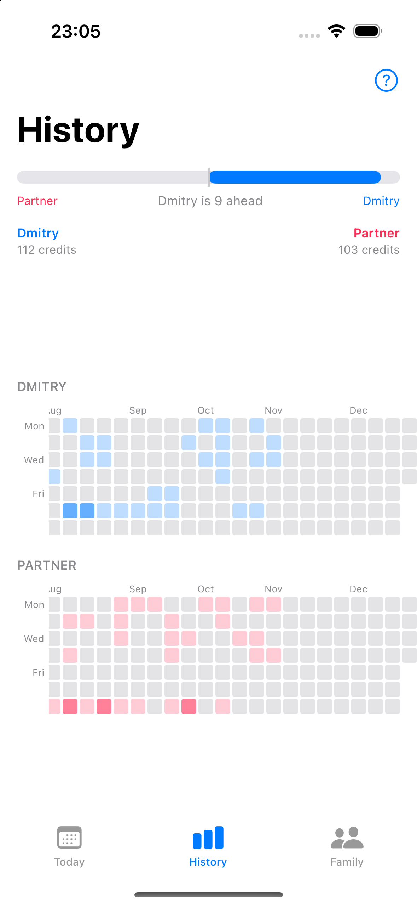
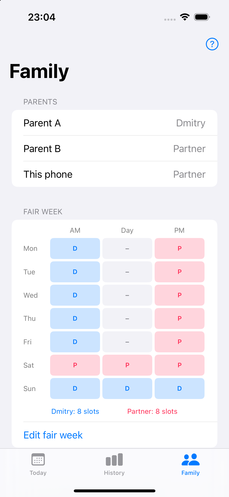

Track who handles childcare — fairly, privately, and in sync.
Log morning and evening slots each day. See a full 6-month history at a glance. Both parents stay in sync automatically via iCloud.
Join the TestFlight beta


